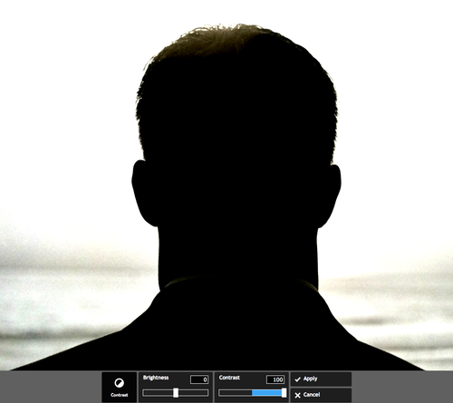
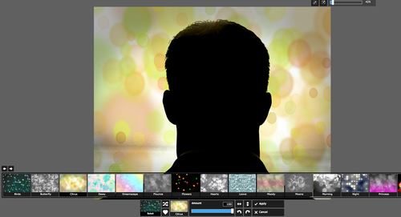
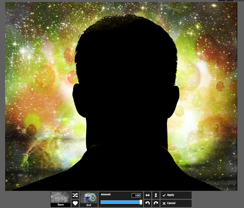

Of the many options in Pixlr Express that let you add all kinds of neat effects to your photos, the space overlays are some of the most popular. You can lay on the cosmic feeling thick or dial it down to give just a hint of stars and constellations. One of our favorite ways to use the space overlays are in conjunction with a silhouette or near silhouette to make what looks like a work of art. It’s easy to do, and we’re going to show you how to whip this up in Pixlr Express.
Step 1: Take a good silhouette photo
You can do this by taking a photo of something that’s strongly backlit. If you use a camera, you can play with your exposure settings. If you’re using an iPhone, you can press on one area of the screen, and your iPhone will set the exposure based on where you placed your finger. Hold down for two seconds, and the exposure will lock. Very useful. Other devices may have similar options, but the basic rule here: The more of a contrast you can get between your whitest white and your blackest black, the better. We started with a photo we took at a wedding on the beach of a wedding-goer watching the sun set.
Step 2: Edit the contrast, hue, vibrance, saturation

If you don’t have a strong silhouette, you may want to bump up the contrast of your photo with the contrast tool. We did 100%. Your photo inevitably has some color in it, and you might want to play with this color. For example, you’ll probably want to bump up the vibrance and saturation. We definitely recommend that. Then, you might even want to change the hue to give this photo an even more otherworldly look. A purple sky looks pretty cool, so consider changing the hue.
Another thing to think about here is what’s in the background of your image. If the white or positive space is just plain white, some texture will make your space effects stand out better. Consider adding a bokeh effect. These work great in conjunction with space overlays, and you can control the amount of bokeh by dialing it down if you only want to suggest these lens-flare-like effects. Here, we chose a strong bokeh effect, “”citrus.””
Step 3: Add your space effects

Then, start adding your space overlays. There are 40 different space overlays in the app, with a balance of light and dark options that will work better with different types of backgrounds. You can add multiple space overlays, although too many may darken your image too much. Not sure which space overlays are the best for your image? Use the randomizer. It will quickly cycle through the options and save you time. Some of the “”stars”” won’t show up in your black zone with some of the overlays, some will. Experiment to get the ones you like.

Also, you can rotate the overlays and control the intensity, which is very handy in placing constellations of stars in the perfect location. We added three or four in different intensity, including “”Ascella”” and the very pretty “”Enif”” overlay.
Finish with a good frame or texture
Those are the basics of space silhouettes, but we like to finish up with a canvas effect to make our image look even more like a work of art. Some of our favorite canvas effects are “”weave”” and “”paper.”” We added a 31% weave overlay, lightened the image a tiny bit, and then topped it off with a black-and-white border that works well with the silhouette of the image.